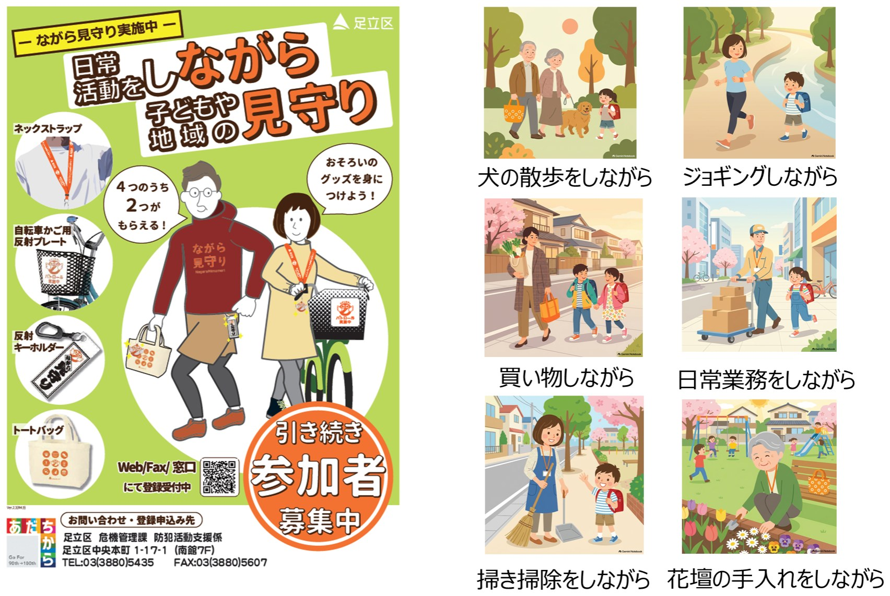
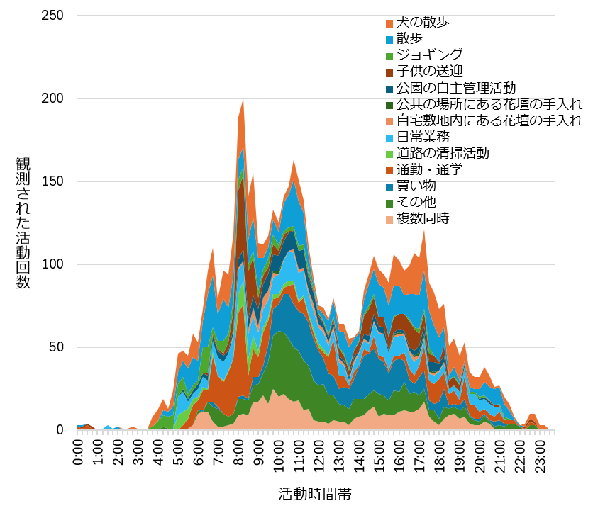
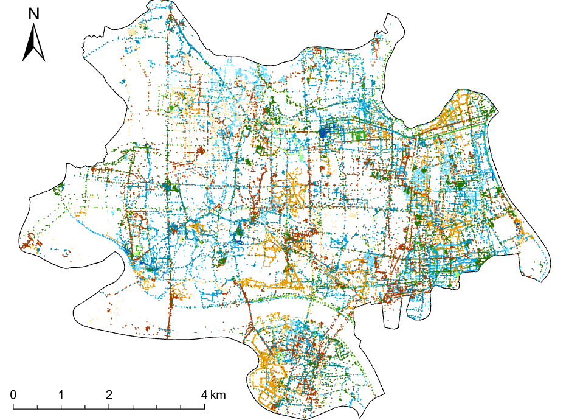

「ながら見守り」の特性と有効性
地域の日常活動を「子どもを見守る目」にする
子どもが歩いて登下校し、放課後に地域で自由に過ごすためには、子どもが移動する時間帯と場所に、地域の大人たちの見守りの目があることが前提になります。しかし、こうした見守りを支えてきた活動は、いま各地で縮小しています。ここでは、地域での大人による日常活動を見守りに転換する「ながら見守り」を事例に、その特性と有効性を示します。
子どもの見守り活動の課題：担い手不足と時間・場所の偏り
町会・自治会などにより行われてきた従来型の子どもの見守り活動には２つの問題があります。１つは担い手の問題です。町会・自治会構成員の高齢化と共働き世帯の増加が、活動の縮小を招いています。もう１つは時間・場所の偏りです。従来型の子どもの見守り活動の中心である徒歩パトロールは集団行動であるため、時間や場所を絞らざるを得ず、結果として、見守りの目の空白が生じます。子どもの犯罪被害リスクは、登下校時の通学路よりも、帰宅後の時間帯の道路や公園で高いことが知られており、この空白は大きな問題です。これに対して、散歩や買い物といった地域での大人の日常活動を行う際に、防犯の視点をもって子どもを見守る「ながら見守り」は、その活動参加の手軽さと活動内容の多様性から、従来型の子どもの見守り活動における２つの問題を解決できる可能性のある取り組みです。
アンケートとGPSを用いたながら見守りの計測
東京都足立区は、2020年9月にこのながら見守りを開始した先進自治体で、2026年3月時点では、5,500人を超える区民が活動を行っています。活動時には区が配布するグッズの着用が推奨され（図1）、活動の時間、場所、内容は各自が自由に決めます。

足立区は、なが見守り活動登録者におそろいのグッズを配布し、大人による日常活動を見守りの目として活かす取り組みを大規模に行っています。
私たちは、足立区におけるながら見守り活動者への質問紙調査と、小型GPSロガーを用いた活動計測調査を行いました。そして、活動参加者の属性を明らかにするとともに、通勤・通学、散歩、犬の散歩、買い物、子どもの送迎、日常業務、ジョギング、公園の自主管理活動、道路の清掃活動、花壇の手入れなど11種類の活動種別に対応づけて、活動を分析しました。
新しい担い手の獲得、広範な時間と場所の見守り
足立区でのながら見守り活動者の7割以上は、これまで防犯活動に参加した経験がない人でした。これを、町会・自治会などの自主防犯団体の構成員と比べると、30〜49歳（若年層）、女性、勤労者の割合が高くなっていました。こうした属性の方がこれまで見守り活動に参加してこなかった理由は、「活動に関する十分な情報がなかった」、「参加する機会がなかった」というものであり、ながら見守りは、潜在的な見守り協力者に働きかけることのできる取り組みであることがうかがえます。
ながら見守り活動者の見守り時の動き方には、多様性がありました。例えば、ジョギングは広い範囲を速く移動する一方、公園の自主管理活動や道路の清掃活動は、狭い範囲をゆっくり移動し、滞在を繰り返しながら動いていました。この動き方の多様性は、集団の徒歩移動によるパトロールに限定されがちな従来型の見守り活動には見られないものです。また、ながら見守り活動が行われる時間帯は、例えば、ジョギングは早朝、犬の散歩は早朝と夕方、日常業務は日中を通してというように、活動ごとにピークがずれていました（図2）。こうした活動ごとの動き方の多様性や活動時間のピークのずれが重なることで、全体としてカバーされる見守りの時間と場所が広がります。実際にながら見守り活動は区内の広い範囲に分布しており（図3）、伝統的な見守り活動の中心であった通学路の登下校の時間帯だけでなく、放課後の時間帯の子どもの遊び場にも及んでいました。

活動種別によってピークとなる時間帯が異なりますが、それらが重なることで、一日を通した切れ目ない見守りの目の創出につながっていることがわかります。

色は活動種別を示します（図2と同じ）。全体の領域形状は足立区を示しています。多様な活動が組み合わさることで、区内の広い範囲に見守りの目が生まれていることがわかります。
実践への示唆：従来型とながら、２つの見守りの組み合わせで子どものASTを支える
足立区では区が推進主体となり、公式SNSや公共施設でのポスター掲示など、町会・自治会経由以外の多様な経路でながら見守りに関する情報を届けています。活動参加へのハードルの低さに加え、こうした区の参加促進のための取り組みが、若年層、女性、勤労者といった新たな層の見守り活動への参加の機会を開いたといえます。
ながら見守りは、従来型の見守り活動を置き換えるものではなく、補完する存在です。防犯に特化した視点で、広い範囲を短時間で見回る伝統的な活動と、日常活動の延長線上で多様な動き方で広い時間帯において見守りを行うながら見守り活動では、生み出される人の目の性格が異なります。性格の異なる２つの見守りの目を組み合わせることで、相乗効果が期待できます。
子どもが安心して歩き、放課後に地域で自由に過ごすことのできる環境は、大人による見守りに支えられています。これまで重視されてきた活動に加え、新たにながら見守りに取り組むことで、無理なく、効果的に、地域に大人による見守りの目を創出することが期待できます。